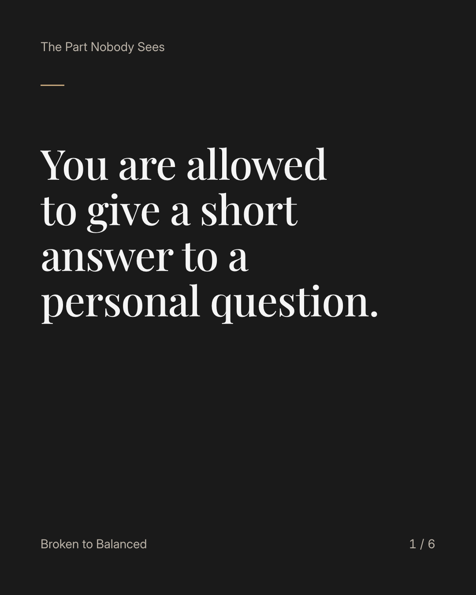
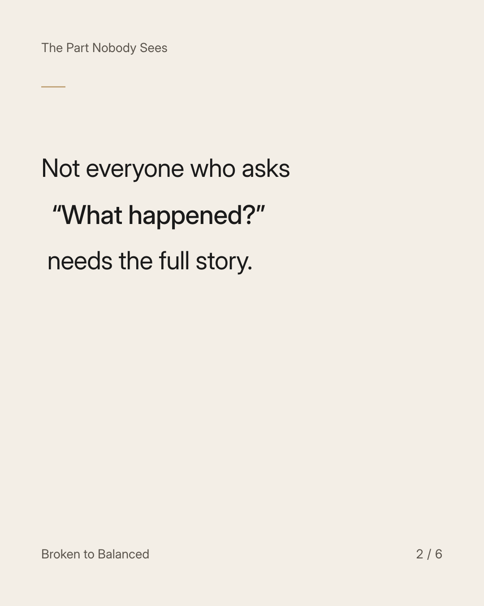
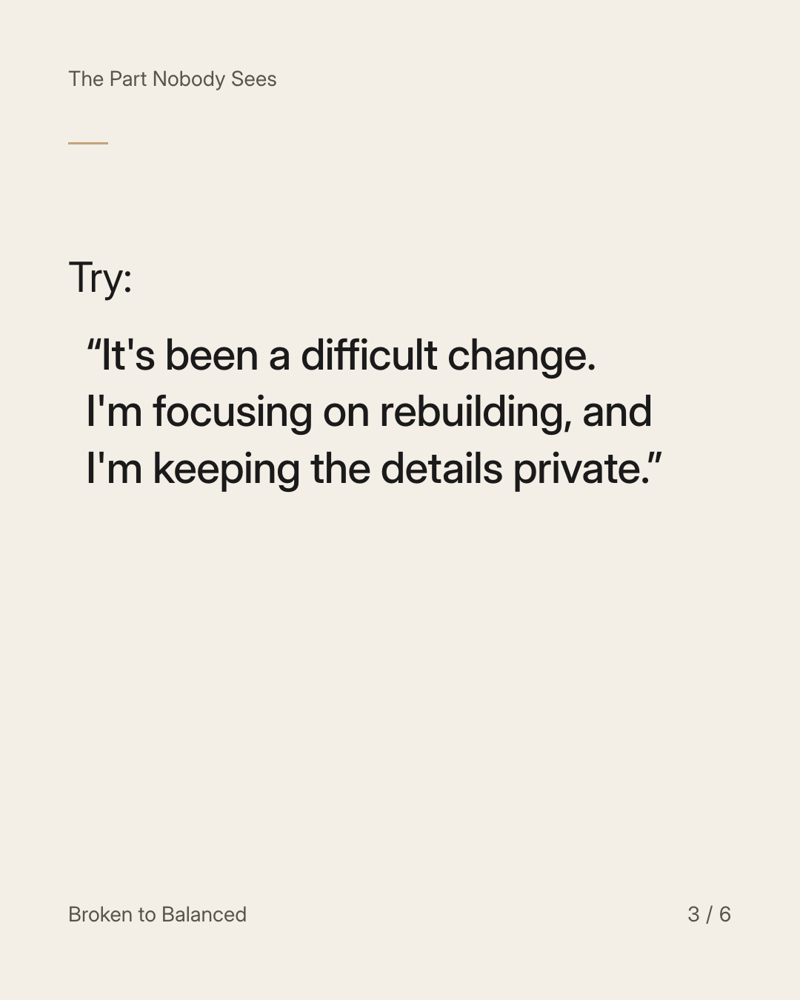
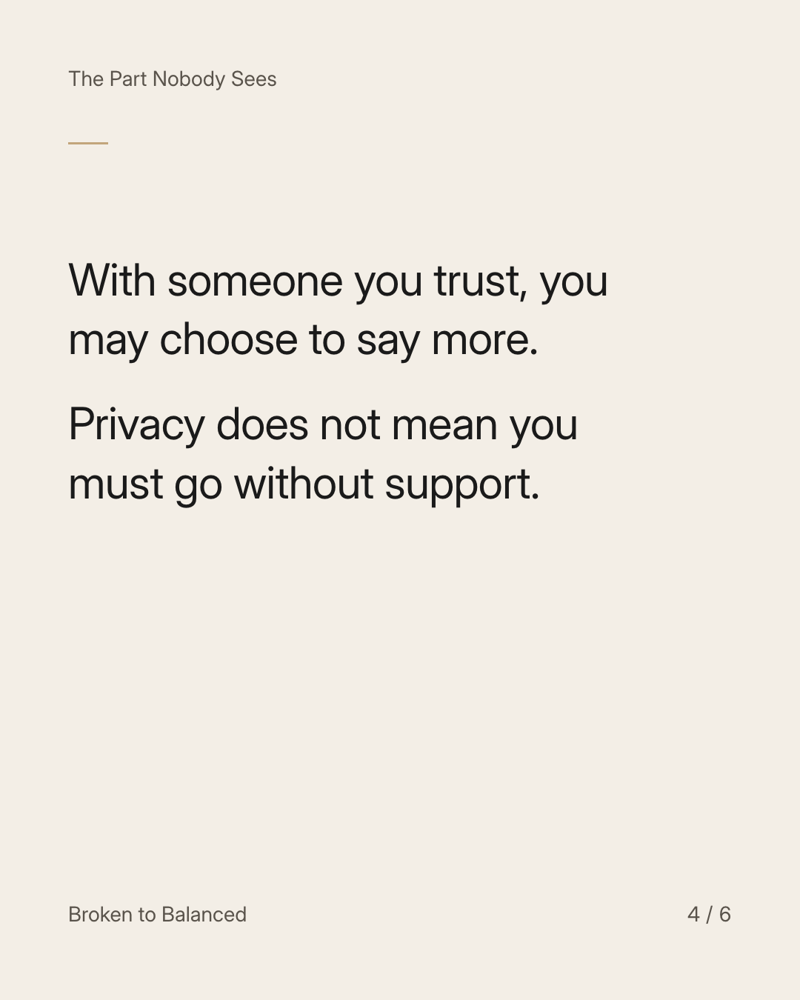
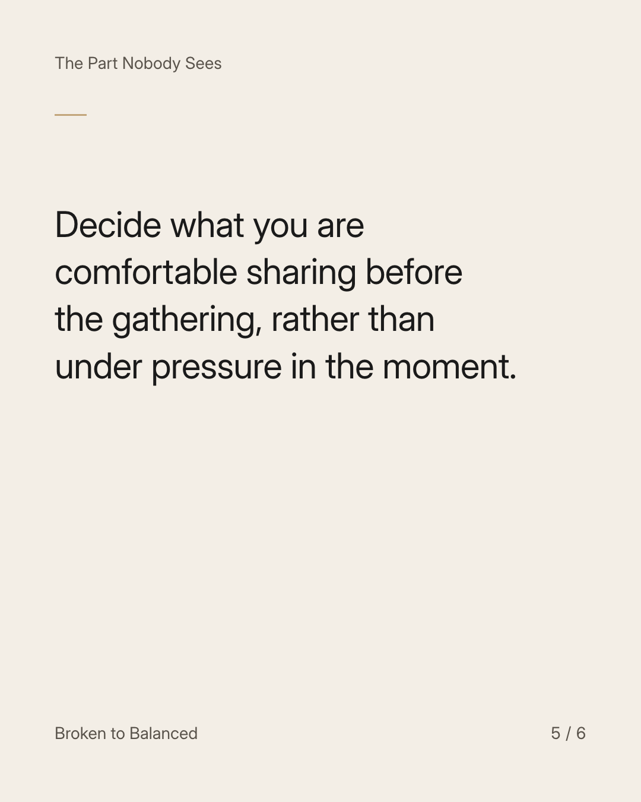
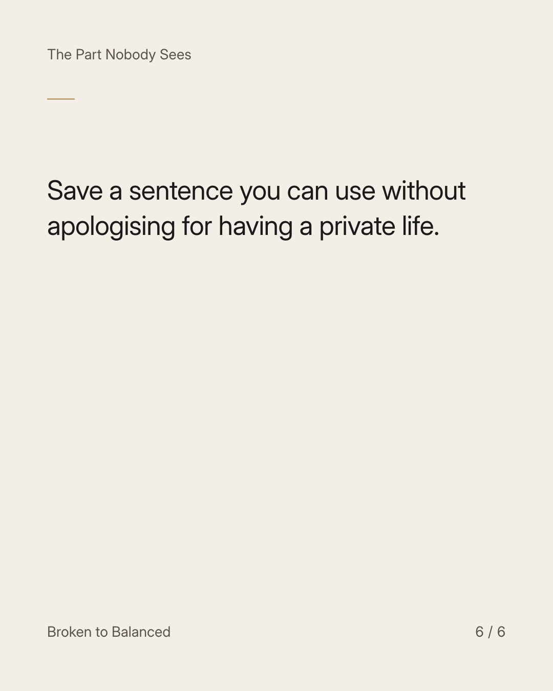

Exact text and accessibility text
You are allowed to give a short answer to a personal question.
Slide 1 of 6. You are allowed to give a short answer to a personal question.


Exact text and accessibility text
Not everyone who asks “What happened?” needs the full story.
Slide 2 of 6. Not everyone who asks “What happened?” needs the full story.


Exact text and accessibility text
Try: “It's been a difficult change. I'm focusing on rebuilding, and I'm keeping the details private.”
Slide 3 of 6. Try: “It's been a difficult change. I'm focusing on rebuilding, and I'm keeping the details private.”


Exact text and accessibility text
With someone you trust, you may choose to say more. Privacy does not mean you must go without support.
Slide 4 of 6. With someone you trust, you may choose to say more. Privacy does not mean you must go without support.


Exact text and accessibility text
Decide what you are comfortable sharing before the gathering, rather than under pressure in the moment.
Slide 5 of 6. Decide what you are comfortable sharing before the gathering, rather than under pressure in the moment.


Exact text and accessibility text
Save a sentence you can use without apologising for having a private life.
Slide 6 of 6. Save a sentence you can use without apologising for having a private life.
Exact caption
Plain-text fallback: select and copy the caption.